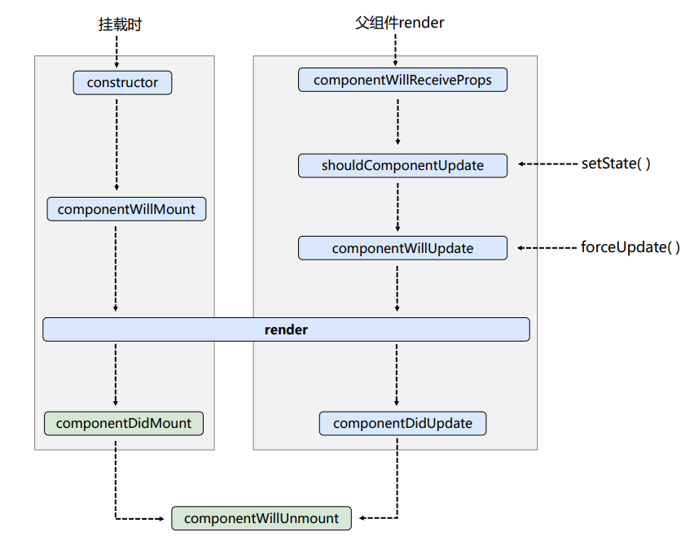

React的生命周期
生命周期（旧）

/*
··· 列举 ···
· constructor (props) {}
· componentWillMount () {}
· componentDidMount () {}
· render () {}
· componentWillReceiveProps (nextProps) {}
· shouldComponentUpdate (nextProps, nextState) {
return true
}
· componentWillUpdate (nextProps, nextState) {}
· componentDidUpdate (prevProps, prevState) {}
· componentWillUnmount () {}
·······················
··· 按组件各时期各阶段 ···
·······················
1. 初始化阶段: 由ReactDOM.render()触发---初次渲染
1. constructor()
2. componentWillMount()
3. render()
4. componentDidMount() =====> 常用
一般在这个钩子中做一些初始化的事，例如：开启定时器、发送网络请求、订阅消息
2. 更新阶段: 由组件内部this.setSate()或父组件render触发
0. componentWillReceiveProps() // 当父组件重新渲染时调用
1. shouldComponentUpdate() // 更新阀门，不调用时默认返回true
2. componentWillUpdate()
3. render() =====> 必须使用的一个
4. componentDidUpdate()
3. 卸载组件: 由ReactDOM.unmountComponentAtNode()触发
1. componentWillUnmount() =====> 常用
一般在这个钩子中做一些收尾的事，例如：关闭定时器、取消订阅消息
*/
生命周期（新）

/*
··· 列举 ···
· constructor (props) {}
· static getDerivedStateFromProps (props, state) {
// 应返回一个对象来更新 state
// 如果返回 null 则不更新任何内容
return null
}
· componentDidMount () {}
· render () {}
· shouldComponentUpdate (nextProps, nextState) {
return true
}
· getSnapshotBeforeUpdate (prevProps, prevState) {
// 应返回 snapshot 的值（或 null）
// componentDidUpdate的第三个参数可以接到这个 snapshot 值
return snapshot
}
· componentDidUpdate (prevProps, prevState, snapshotValue) {}
· componentWillUnmount () {}
·······················
··· 按组件各时期各阶段 ···
·······················
1. 初始化阶段: 由ReactDOM.render()触发---初次渲染
1. constructor()
2. getDerivedStateFromProps // 若state的值在任何时候都取决于props，那么可以使用getDerivedStateFromProps
3. render()
4. componentDidMount() =====> 常用
一般在这个钩子中做一些初始化的事，例如：开启定时器、发送网络请求、订阅消息
2. 更新阶段: 由组件内部this.setSate()或父组件重新render触发
1. getDerivedStateFromProps
2. shouldComponentUpdate()
3. render()
4. getSnapshotBeforeUpdate
5. componentDidUpdate()
3. 卸载组件: 由ReactDOM.unmountComponentAtNode()触发
1. componentWillUnmount() =====> 常用
一般在这个钩子中做一些收尾的事，例如：关闭定时器、取消订阅消息
*/
生命周期新旧对比
将以下3个旧生命周期加上 UNSAFE_ 前缀，未来版本可能会废弃
componentWillMount()
componentWillReceiveProps(nextProps)
componentWillUpdate(nextProps, nextState)
新增2个新生命周期
getDerivedStateFromProps(props, state) {
// 若state值在任何时候都取决于props时使用
//
// 应该返回一个对象来更新 state
// 如果返回null，则不更新
return null
}
getSnapshotBeforeUpdate(prevProps, prevState){
// 在最近一次渲染输出（提交到 DOM 节点）之前调用。
// 它使得组件能在发生更改之前从 DOM 中捕获一些信息（例如，滚动位置）
//
// 应返回 snapshot 的值（或 null）
// componentDidUpdate的第三个参数可以接到这个 snapshot 值
return snapshot
}
错误处理
当渲染过程，生命周期，或子组件的构造函数中抛出错误时，会调用如下方法：
static getDerivedStateFromError (error)
此生命周期会在后代组件抛出错误后被调用，将抛出的错误作为参数，并返回一个值以更新 state
会在 渲染阶段 调用，因此 不允许出现副作用
componentDidCatch (error, info)
此生命周期会在后代组件抛出错误后被调用，
会在 提交阶段 调用，因此 允许出现副作用
error - 抛出的错误
Info - 带有 componentStack key 的对象，其中包含有关组件引发错误的栈信息